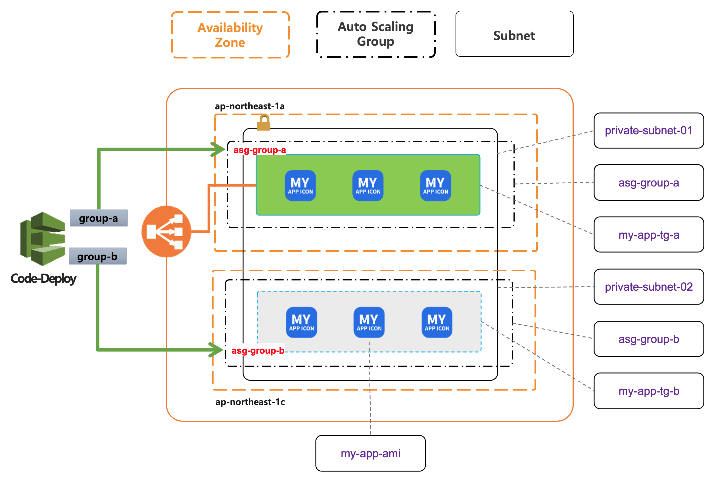

VPC 리소스 구성
Demo frontend 어플리케이션의 Blue/Green 배포를 위한 VPC의 주요 리소스를 구성 합니다.

VPC 주요 리소스
| 리소스 타입 | 리소스 이름 | 설명 |
|---|---|---|
| 서브 네트워크 | private-subnet-01 | target group 01의 my-app을 배치를 위한 서브넷으로 HA를 위해 AZ(ap-northeast-1a) 에 구성 |
| 오토 스케일링 그룹 | asg-group-a | CodeDeploy의 group-a 배포그룹 타겟인 auto-scaling-group “asg-group-a” (그린 영역) |
| 타겟 그룹 | my-app-tg-a | my-app-tg-a 타겟 그룹은 ALB 의 라우팅 경로로 연결된 On-Servcie 중인 서비스 그룹 (그린 영역) |
| 서브 네트워크 | private-subnet-02 | target group 02의 my-app을 배치를 위한 서브넷으로 HA를 위해 AZ(ap-northeast-1c) 에 구성 |
| 오토 스케일링 그룹 | asg-group-b | CodeDeploy의 group-b 배포그룹 타겟인 auto-scaling-group “asg-group-b” (블루 영역) |
| 타겟 그룹 | my-app-tg-b | CodeDeploy의 group-b 배포그룹 타겟인 auto-scaling-group “asg-group-b” (블루 영역) |
| 시작 템플릿 | my-app-asg-lt | asg-group-a, asg-group-b 오토 스케일링 그룹에서 사용 하는 ec2인스턴스 생성 및 health-frontend 를 위한 시작 템플릿 구성 |
오토 스케일 그룹
EC2 인스턴스(컴퓨팅 파워)의 탄력적인 확장 기능을 가능하게 하는 AWS 의 서비스
| 주요 속성 | 설정 값 예시 | 기타 |
|---|---|---|
| 오토 스케일명 | my-app-asg | |
| 시작 템플릿 | my-app-asg-lt | 새롭게 구동되는 my-app를 위한 ec2 인스턴스 생성시 참조 하는 시작 구성 템플릿 |
| desired | 1 | 최초 시작에 필요한 인스턴스 수 |
| min | 1 | 탄력적으로 축소 하는 경우 인스턴스의 최소 갯수 |
| max | 5 | 탄력적으로 확장 하는 경우 인스턴스의 최대 갯수 |
| vpc-id | vpc10290124 | ASG 가 구성된 VPC |
| AZ | ap-northeast-2a, ap-northeast-2c | HA 를 통한 가용 구성을 위해 물리적인 Data Center 설정 |
| target group | my-app-tg-a | 오토스케일의 탄력적인 확장에 의해 EC2 인스턴스가 생성 되어 서비스 되는 대상 그룹 |
| 상태검사 유휴기간 | 300 | 오토스케일 라이프사이클의 주요 이벤트에 대해 상태 점검이 필요한 기준 시간 |
시작 템플릿
시작 템플릿은 EC2 인스턴스를 새롭게 구동할 때 참조 하는 OS 타입, EC2 타입, EBS Volume, 보안 그룹 등을 정의 합니다.
| 주요 속성 | 설정 값 예시 | 설명 |
|---|---|---|
| name | my-app-asg-lt | |
| ec2-type | m5.large | 새롭게 구동되는 my-app를 위한 ec2 인스턴스 생성시 참조 하는 시작 구성 템플릿 |
| ami-id | ami-0c5a717974f63b04c | 최초 시작에 필요한 인스턴스 수 |
| Security Group | sg-0627eb058ca78b96c, ... | 탄력적으로 축소 하는 경우 인스턴스의 최소 갯수 |
| key-pair | prd-keypair | 탄력적으로 확장 하는 경우 인스턴스의 최대 갯수 |
| EBS-snapshot | snap-0cbb59dd32bab1541 | OS 설치에 필요한 EBS 볼륨 스냅샷 |
| EBS Size | 12 GB | EBS 볼륨 크기 |
| Volum Type | gp2 | SSD, HDD 등의 디스크 액세스 타입 |
| 종료시 삭제 | Yes | 오토스케일의 경우 자동 축소된 인스턴스에 대해 종료 하는 정책이 기본 값 |
| user-data | 300 | health check를 위한 frontend 구동 등 사용자 정의 쉘 스크립트 실행시 기입 |
Code-Deploy
AWS Code-Deploy를 통해 Blue/Green 배포를 구성 합니다.
| 주요 속성 | 설정 값 예시 | 설명 |
|---|---|---|
| 애플리케이션 | my-app-code-deploy | my-app 어플리케이션을 Blue/Green 배포를 합니다. |
| 플랫폼 | EC2/온프레미스 | 배포 대상이 EC2 인 경우 |
| 배포 유형 | 현재 위치 | "현재 위치"와 "블루 그린" 배포 두가지 유형을 제공 하지만, "현재 위치" 유형을 커스텀 하여 "블루 그린" 배포를 구성 합니다. |
| 배포 그룹 | group-a, group-b | 배포 그룹 하나는은 오토 스케일링 그룹을 지정할 수 있습니다. blue 와 green에 해당하는 2개의 배포 그룹이 필요 합니다. |
| 오토 스케일 그룹 | my-app-asg-a, my-app-asg-a | 배포 그룹이 사용하는 오토 스케일 그룹으로 group-a 는 my-app-asg-a 으로, group-b 는 my-app-asg-a 을 사용 하는 예가 됩니다. |